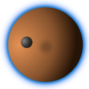
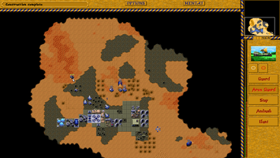
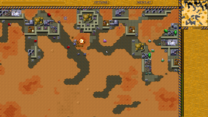

Dune Legacy
Dieser Artikel wurde für die folgenden Ubuntu-Versionen getestet:
Ubuntu 16.04 Xenial Xerus
Zum Verständnis dieses Artikels sind folgende Seiten hilfreich:

Dune Legacy  ist ein Nachbau des Echtzeit-Strategiespiels Dune II. Dune II wurde 1992 von Westwood Studios entwickelt und prägte als erstes Spiel den Begriff "Echtzeit-Strategiespiel". Die Geschichte basiert lose auf dem Science-Fiction Roman "Dune" (dt. "Der Wüstenplanet") von Frank Herbert. Revolutionär war vor allem die Mischung aus Basis-Aufbau, Ressourcen-Abbau und die Steuerung von Einheiten im Kampf mit der Maus.
ist ein Nachbau des Echtzeit-Strategiespiels Dune II. Dune II wurde 1992 von Westwood Studios entwickelt und prägte als erstes Spiel den Begriff "Echtzeit-Strategiespiel". Die Geschichte basiert lose auf dem Science-Fiction Roman "Dune" (dt. "Der Wüstenplanet") von Frank Herbert. Revolutionär war vor allem die Mischung aus Basis-Aufbau, Ressourcen-Abbau und die Steuerung von Einheiten im Kampf mit der Maus.
Der Spieler steuert eines der drei Häuser Atreides, Ordos und Harkonnen, die um die Vorherrschaft auf dem Wüstenplaneten Dune kämpfen. Zentrale Rolle spielt die Ressource Spice (dt. Gewürz), welche mit Erntemaschinen abgebaut und in Geld umgewandelt werden kann. Mit Hilfe des erwirtschafteten Geldes können dann Gebäude und Einheiten gebaut werden. Ziel des Spiels ist die Vernichtung der anderen Häuser um der alleinige Herrscher über Dune zu werden.
Im Gegensatz zum DOS-Spiel Dune II läuft Dune Legacy auch auf modernen Systemen und mit höheren Bildschirmauflösungen. Es versucht so nahe wie möglich am Spielprinzip des Vorbilds zu bleiben, aber bei der Steuerung einige Neuerungen zu integrieren, die erst nach Dune II in Echtzeit-Strategiespiele Einzug fanden (z.B. das gleichzeitige Selektieren von mehreren Einheiten). Darüber hinaus ermöglicht Dune Legacy einen Mehrspielermodus im lokalen Netzwerk oder Internet.
Dune Legacy verwendet die Grafiken und Sounds des Originalspiels Dune II, welches während der Installation benötigt wird!
|  |  |
| Atreides-Basis | Basis des Feindes |
Installation¶
Dune Legacy kann als Fremdpaket von der Downloadseite des Projekts  heruntergeladen werden. Es stehen Pakete für 32- und 64-Bit zur Verfügung. Nach dem Herunterladen kann die Installation von Dune Legacy mit einem Doppelklick auf die Datei gestartet werden [1] [2].
heruntergeladen werden. Es stehen Pakete für 32- und 64-Bit zur Verfügung. Nach dem Herunterladen kann die Installation von Dune Legacy mit einem Doppelklick auf die Datei gestartet werden [1] [2].
Hinweis!
Fremdpakete können das System gefährden.
Spieledaten¶
Dune Legacy benötigt einige Dateien des Originals, die es im Verzeichnis .config/dunelegacy/data im Homeverzeichnis erwartet. Am einfachsten erzeugt man diesen Ordner, indem man Dune Legacy kurz startet und beim Erscheinen der Fehlermeldung, dass es die benötigten Dateien nicht finden kann, mit Esc wieder beendet. Eventuell muss man Versteckte Dateien und Ordner anzeigen lassen [3], um den neuen Ordner zu finden. In diesen müssen dann alle .pak-Dateien von Dune II kopiert werden um Dune Legacy spielen zu können:
ATRE.PAK
DUNE.PAK
ENGLISH.PAK
FINALE.PAK
FRENCH.PAK (um auf französisch zu spielen)
GERMAN.PAK (um auf deutsch zu spielen)
HARK.PAK
INTRO.PAK
INTROVOC.PAK
MENTAT.PAK
MERC.PAK
ORDOS.PAK
SCENARIO.PAK
SOUND.PAK
VOC.PAK
Variante 1: Aus dem Installationsverzeichnis von Dune II¶
Ist Dune II bereits irgendwo installiert (z.B. unter Windows), so können die Dateien einfach aus dem Installationsverzeichnis von Dune II kopiert werden.
Benutzung¶
Nach dem ersten Start sollte man zunächst in das Optionen-Menü wechseln um dort eine geeignete Bildschirmauflösung sowie eventuell weitere Einstellungen auszuwählen.
Dune Legacy bietet verschiedene Spielmodi an:
Kampagne - Man spielt mehrere Missionen eines Hauses hintereinander (wie in Dune II).
Geplänkel - Man kann wählen, welche Mission der Kampagne man spielen möchte.
Freies Spiel - Man kann aus mehreren Karten eine auswählen.
Mehrspieler - Man kann im lokalen Netzwerk oder im Internet mit anderen gemeinsam spielen.
Für Anfänger bietet sich die Kampagne an, da in dieser die Komplexität schrittweise erhöht wird. So stehen in der ersten Mission nur Windfallen und Raffinerien zum Bau zur Auswahl, welche man beide bauen sollte, um mit Energie und mit Geld versorgt zu werden. Das Erforschen der anderen Gebäude und Einheiten, die in weiteren Missionen zur Wahl stehen, ist Teil des Spiels und soll hier nicht weiter verraten werden.
Steuerung¶
| Dune Legacy | |
| Taste(n) | Funktion |
 | Gebäude oder Einheit selektieren |
 | Selektierte Einheit hier hin bewegen bzw. Objekt an dieser Stelle angreifen |
| ↑ , ↓ , ← , → | Kartenauschnitt verschieben |
| F1 , F2 , F3 | Karte zoomen |
| Spiel pausieren | |

Infobox¶
| Dune II – Kampf um Arrakis | |
| Originaltitel: | Dune II – The Building of A Dynasty |
| Genre: | Echtzeitstrategie |
| Sprache: |   |
| Veröffentlichung: | 1992 |
| Publisher: | Virgin Interactive |
| Medien: | Diskette (4) / CD (1) / Download |
| Strichcode / EAN / GTIN: | 5013715045360 / 5028587003776 |
| Läuft mit: | nativ |
- Erstellt mit Inyoka
-
 2004 – 2017 ubuntuusers.de • Einige Rechte vorbehalten
2004 – 2017 ubuntuusers.de • Einige Rechte vorbehalten
Lizenz • Kontakt • Datenschutz • Impressum • Serverstatus -
Serverhousing gespendet von